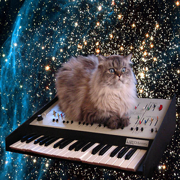

Cytat Carla Sagana na dziś: Spójrz ponownie na tą kropkę. To Nasz dom. To my. Na niej wszyscy, których kochasz, których znasz. O których kiedykolwiek słyszałeś. Każdy człowiek,
który kiedykolwiek istniał, przeżył tam swoje zycie. To suma naszych radości i smutków. To tysiące pewnych swego religii, ideoligii i doktryn ekonomicznych.
To każdy myśliwy i zbieracz. Każdy bohater i tchórz. Każdy twórca i niszczyciel cywilizacji. Każdy król i chłop. Każda zakochana para. Każda matka, ojciec i
każde pełne nadziei dziecko. Każdy wynalazca i odkrywca. Każdy moralista. Każdy skorumpowany polityk. Każdy wielki przywódca i wielka gwiazda. Każdy święty i
każdy grzesznik w historii naszego gatunku, żył tam. Na drobinie kurzu zawieszonej w promieniach Słońca. Pomyśl o rzekach krwi przelewanych przez tych wszystkich
imperatorów, którzy w chwale i zwycięstwie mogli stać się chwilowymi władcami fragmentu tej kropki. Naszym pozą. Naszemu urojonemu poczuciu własnej ważności,
naszej iluzji posiadania jakiejś uprzywilejowanej pozycji we wszechświecie, rzuca wyzwanie ta oto kropka bladego światła.
O stronie słów kilka:
Jak donoszą badania w celu zainteresowania internauty zawartością strony najważniejsze jest pierwsze wrażenie.
Dlatego drogi internauto witam Cię z tym:
 Rysunek 1. Zdjęcie kota przemierzającego wszechświat na keybordzie.
Mam nadzieję, że zainteresowałem Cię tym zdjęciem i zachęciłem/zachęciłam do dalszego przeglądania. Jak zapewne
się domyślasz content tej strony
nie jest stricte naukowy. Znajdziesz na niej jednak kilka przydatnych funkcji takich jak kosmiczny kalkulator
odległości- Kosmolator. Może nawet zainteresujesz się kosmosem
i otaczającym nas wszechświatem? Jak to powiedział Carl Sagan: Nie chcę wierzyć, chcę
wiedzieć. Liczę na to drogi użytkowniku, że ty również będziesz chciał się dowiedzieć jak najwięcej
i coraz lepiej poznawać otaczający nas Wszechświat.
To by było na tyle jeżeli chodzi o wstęp. Mam nadzieję, że Cię zachęciłem i do dzieła!
Aktualna godzina:
Dzisiejsza data:
Do następnego pojawienia się komety Halleya zostało: